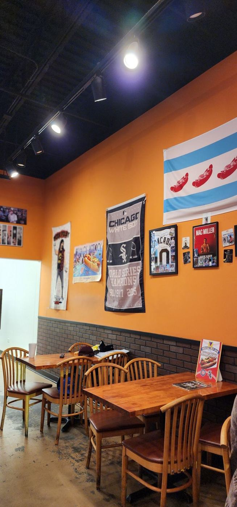

A taste of the city
A Chicago-style hot dog stand on Belvidere Rd, with the city flag on the wall. Guests mention a super nice owner and friendly, welcoming service, even when a big group walks in right before closing.
0Google rating
0reviews
11opens daily (AM)
8closes Mon–Sat (PM)